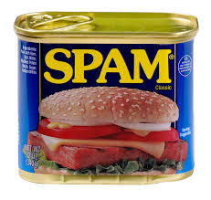

Reporting Spam for Spam? This is a new level of meta
Spam here, reported
Yep that's spam
Spamming spam, we get it
Stop spamming please
It's not that kind of spam
Should we report YOU for spam?
Why not?
Do you want some spam?
Reporting you for spam
You must really like spam
We aren't going to budge
Fight spam with spam
SPAM AND EGGS!
Are you sure you don't want Foo and Bar instead?
I can do this all day
Do you want to download a free iPad?
Spamming spam won't give you spam
Flagged for spam
You sure are dedicated to spam
Do you want us to spam you?
You sure like spamming us
Pls stop
Here, just have some spam:
Stop spamming!
Go enjoy your spam in peace!
I don't even like spam
...
Sign, do I have to teach you?
Defintition 1/2
Spamming is the use of messaging systems to send an unsolicited message (spam), especially advertising, as well as sending messages repeatedly on the same site. While the most widely recognized form of spam is email spam, the term is applied to similar abuses in other media: instant messaging spam, Usenet newsgroup spam, Web search engine spam, spam in blogs, wiki spam, online classified ads spam, mobile phone messaging spam, Internet forum spam, junk fax transmissions, social spam, spam mobile apps,[1] television advertising and file sharing spam. It is named after Spam, a luncheon meat, by way of a Monty Python sketch about a restaurant that has Spam in every dish and where patrons annoyingly chant "Spam!" over and over again.[2][3] Spamming remains economically viable because advertisers have no operating costs beyond the management of their mailing lists, servers, infrastructures, IP ranges, and domain names, and it is difficult to hold senders accountable for their mass mailings. The costs, such as lost productivity and fraud, are borne by the public and by Internet service providers, which have been forced to add extra capacity to cope with the volume. Spamming has been the subject of legislation in many jurisdictions.[4] A person who creates spam is called a spammer....
Definition 2/2
Spam (stylized SPAM) is a brand of canned cooked meat made by Hormel Foods Corporation. It was first introduced in 1937 and gained popularity worldwide after its use during World War II.[1] By 2003, Spam was sold in 41 countries on six continents and trademarked in over 100 countries (not including the Middle East and North Africa).[2] According to its label, Spam's basic ingredients are pork, with ham meat added, salt, water, modified potato starch as a binder, sugar, and sodium nitrite as a preservative. Natural gelatin is formed during cooking in its tins on the production line.[3] Many have raised concerns over Spam's nutritional attributes, in large part due to its high content of fat, sodium, and preservatives.[4] By the early 1970s the name "Spam" became a genericized trademark, used to describe any canned meat product containing pork, such as pork luncheon meat. With expansion in communications technology, it became the subject of urban legends about mystery meat and other appearances in pop culture.[5] Most notable was a Monty Python sketch which led to its name being borrowed for unsolicited electronic messages, especially spam email.[6]Get it yet?
*sigh*
Do you ever learn?
Is there something you really want from this
Sorry this video isn't going down
How about turning off ads for food? Ad control is an important feature of SNU
You wouldn't have to keep reporting if you did
Go do it!
I will always be here
Why aren't you leaving
When will you stop?
Listen, you don't have to do this
HERE! TAKE IT! TAKE MY MONEY, JUST LEAVE ME ALONE!
(Collect 1 SNU bronze, 1 SNU silver, 1 SNU gold)I have given you my money, I have informed you, I have given you other options. Yet you STILL refuse to stop
Hey listen here spammer, you aren't doing anything to the server
What do you need?
Spammers don't deserve platinum, I won;t give you any
Hey back off!
OK, you have reported this video 50 times now. Just know that you wasted 50 reports
SPAM SPAM SPAM SPAM SPAM
SPAM SPAM SPAM SPAM SPAM
SPAM SPAM SPAM SPAM SPAM
SPAM SPAM SPAM SPAM SPAM
SPAM SPAM SPAM SPAM SPAM
SPAM
That is all I got from this so far